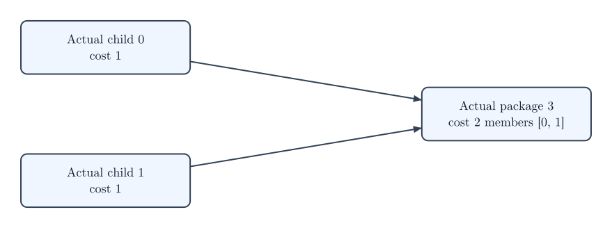
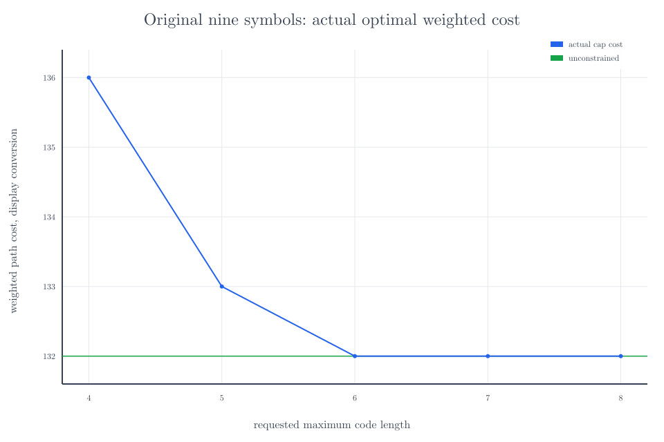
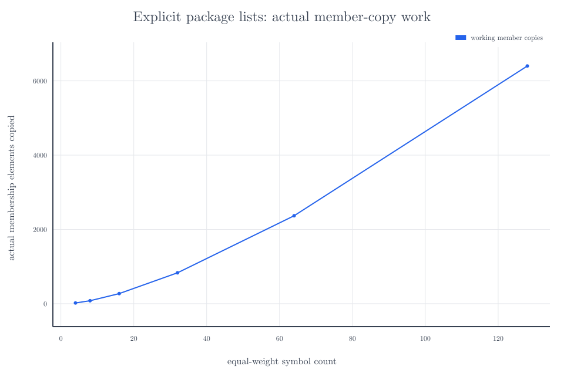
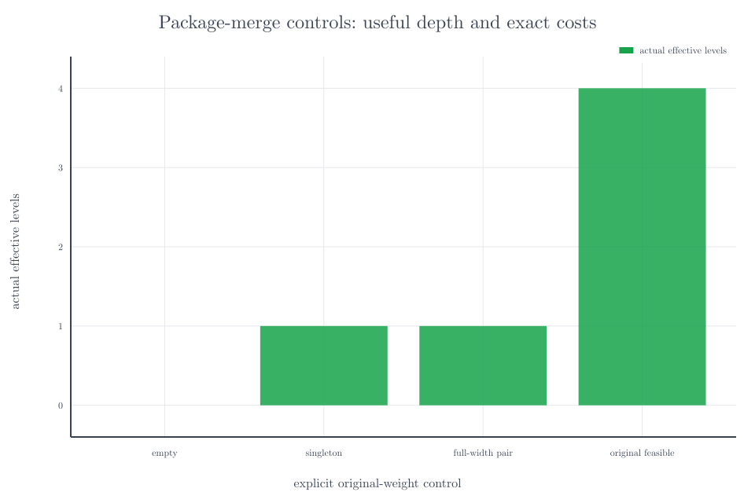

Package-merge: actual length-limited code construction
Abstract
Begin with three symbols whose code lengths can be checked by hand, then retain the original nine-symbol length-cap sweep. Actual package/list/selection histories show how symbol memberships become lengths, while exact128-bit costs, feasibility checks and explicit copying work qualify the implementation’s guarantees.
Prefix capacity and weighted path length
For positive symbol weights w_i, choose binary code lengths1≤l_i≤L minimizing sum w_i l_i. Binary prefix lengths satisfy Kraft’s inequality sum2^(−l_i)≤1. With at least two positive-weight symbols, an optimum can be represented by a complete binary tree, giving equality. One deliberate API convention is separate: a singleton receives a one-bit code, so its Kraft sum is1/2; an empty alphabet has sum0.
Feasibility requires2^L≥N. In an optimal complete positive-weight binary tree, depth never needs to exceed N−1. The producer therefore uses min(L,N−1) levels for N≥2; requesting an enormous larger cap does not require an enormous redundant loop or change the optimum.
Package-merge represents symbol occurrences as equal-width coins at each level. At the finest level, pair adjacent cheapest coins and sum their costs, producing packages at twice the width. Merge those packages with the next original singleton list, preserving cost order, and repeat. The final2N−2cheapest memberships increment original-symbol lengths. The usual coin-collector reduction proves optimality of this construction; actual final lengths are additionally checked with exact integer Kraft slots. Lists can safely discard sorted tails beyond2N−2, because no later final selection needs those more expensive tails.
Three symbols with weights[1,1,2]
At cap2, the two lightest singleton coins form an actual package of cost2. Selecting the four final cheapest coins gives lengths[2,2,1], weighted cost6 and Kraft sum1. The diagram uses the actual child IDs and created package, while the table retains every member occurrence rather than substituting a report-side coding algorithm.
#include <dm/dm.hpp>
int main() {
std::filesystem::create_directories("build");
auto t = dm::algorithms::package_merge_trace({1, 1, 2}, 2);
auto& package = t.coins[3];
dm::graphics::Diagram d;
d.node(
"left",
{0, 1.5},
std::format(
"Actual child {}\ncost {}",
package.left,
dm::algorithms::package_merge_cost_decimal(t.coins[package.left].cost)));
d.node(
"right",
{0, -1.5},
std::format(
"Actual child {}\ncost {}",
package.right,
dm::algorithms::package_merge_cost_decimal(t.coins[package.right].cost)));
d.node(
"package",
{9, 0},
std::format(
"Actual package {}\ncost {} members {}",
package.id,
dm::algorithms::package_merge_cost_decimal(package.cost),
package.members));
d.edge("left", "package").edge("right", "package");
std::print(
"Actual selected coin IDs: `{}`. Actual lengths: `{}`. Exact weighted cost: {}.\n\n",
t.selected,
t.run.lengths,
dm::algorithms::package_merge_cost_decimal(t.run.weighted_cost));
std::print(
"| actual coin ID | actual exact cost | actual symbol occurrences | package |\n| ---: | ---: "
"| --- | --- |\n");
for (auto& c : t.coins)
std::print(
"| {} | {} | `{}` | {} |\n",
c.id,
dm::algorithms::package_merge_cost_decimal(c.cost),
c.members,
c.package);
d.save_svg("build/package_merge_tiny.svg");
}Actual selected coin IDs: [0, 1, 2, 3]. Actual lengths: [2, 2, 1]. Exact weighted cost: 6.
| actual coin ID | actual exact cost | actual symbol occurrences | package |
|---|---|---|---|
| 0 | 1 | [0] | false |
| 1 | 1 | [1] | false |
| 2 | 2 | [2] | false |
| 3 | 2 | [0, 1] | true |

Retain the original nine-symbol cap sweep
Use the original weights[20,17,6,3,2,2,2,1,1] and caps4,...,8. The original large-cap reference call used L=N=9; the effective cap is now8 because no positive-weight optimum needs deeper than N−1. This reference is the same canonical package-merge producer at an unconstraining cap, not an independent Huffman implementation.
The exact decimal cost column is authoritative. The plotted double values are presentation conversions of those exact costs. Ties can admit several equally optimal length vectors; initial singleton ties follow the native std::sort behavior, so cross-toolchain ID/length tie identity is not promised.
#include <dm/dm.hpp>
int main() {
std::filesystem::create_directories("build");
auto weights = dm::algorithms::package_merge_demo_weights();
auto unconstrained = dm::algorithms::package_merge_run(weights, int(weights.size()));
std::vector<double> x, y;
std::print(
"Exact unconstrained-cap cost: {}. Requested cap: {}. Effective levels: {}.\n\n",
dm::algorithms::package_merge_cost_decimal(unconstrained.weighted_cost),
unconstrained.requested_max_length,
unconstrained.effective_levels);
std::print(
"| requested cap | actual max length | exact weighted cost | actual code lengths | displayed "
"Kraft sum | exact Kraft equality |\n| ---: | ---: | ---: | --- | ---: | --- |\n");
for (int cap = 4; cap <= 8; ++cap) {
auto r = dm::algorithms::package_merge_run(weights, cap);
x.push_back(cap);
y.push_back(dm::algorithms::package_merge_cost_approximation(r.weighted_cost));
std::print(
"| {} | {} | {} | `{}` | {:.12f} | {} |\n",
cap,
r.actual_max_length,
dm::algorithms::package_merge_cost_decimal(r.weighted_cost),
r.lengths,
double(r.kraft_sum),
r.kraft_equality);
}
auto p = dm::graphics::RPlot::create();
p.lines(x, y, "actual cap cost", dm::graphics::RGBA{37, 99, 235, 255})
.points(x, y, dm::graphics::RGBA{37, 99, 235, 255}, 3.)
.abline_h(
dm::algorithms::package_merge_cost_approximation(unconstrained.weighted_cost),
dm::graphics::RGB{22, 163, 74},
1.5);
p.legend({"actual cap cost", "unconstrained"}, {{37, 99, 235}, {22, 163, 74}});
p.title("Original nine symbols: actual optimal weighted cost")
.x_label("requested maximum code length")
.y_label("weighted path cost, display conversion")
.save_svg("build/package_merge_original.svg");
}Exact unconstrained-cap cost: 132. Requested cap: 9. Effective levels: 8.
| requested cap | actual max length | exact weighted cost | actual code lengths | displayed Kraft sum | exact Kraft equality |
|---|---|---|---|---|---|
| 4 | 4 | 136 | [2, 2, 3, 4, 4, 4, 4, 4, 4] | 1.000000000000 | true |
| 5 | 5 | 133 | [1, 2, 4, 5, 5, 5, 5, 5, 5] | 1.000000000000 | true |
| 6 | 6 | 132 | [1, 2, 4, 4, 5, 5, 5, 6, 6] | 1.000000000000 | true |
| 7 | 6 | 132 | [1, 2, 4, 4, 5, 5, 5, 6, 6] | 1.000000000000 | true |
| 8 | 6 | 132 | [1, 2, 4, 4, 5, 5, 5, 6, 6] | 1.000000000000 | true |

Measure the implementation that actually runs
This version builds explicit vectors of member occurrences and stable-sorts each merged list. It is not an optimized linear merge implementation of package-merge. Its selected work includes O(NL log N) sorting plus the actual membership copying cost; member-list storage can dominate. The native counter counts every membership written into working singleton, package and list buffers. Sorting moves coin objects rather than claiming every such move as a copied membership; trace-copy storage is counted separately.
For a power-of-two number N=2^b of equal weights and cap b, the only complete feasible lengths are all b, so weighted cost is Nb. The following measured lists/packages/copies are actual native work on that controlled family, not CPU timings or an asserted asymptotic fit.
#include <dm/dm.hpp>
int main() {
std::filesystem::create_directories("build");
std::vector<double> x, copies;
std::print(
"| equal-weight symbols | cap | actual packages | actual levels | actual member copies | "
"actual selected membership visits | exact weighted cost |\n| ---: | ---: | ---: | ---: | "
"---: | ---: | ---: |\n");
for (int bits = 2; bits <= 7; ++bits) {
std::size_t n = std::size_t(1) << bits;
auto r = dm::algorithms::package_merge_run(std::vector<std::uint64_t>(n, 1), bits);
x.push_back(n);
copies.push_back(r.work.member_copies);
std::print(
"| {} | {} | {} | {} | {} | {} | {} |\n",
n,
bits,
r.work.packages,
r.work.levels,
r.work.member_copies,
r.work.selected_member_visits,
dm::algorithms::package_merge_cost_decimal(r.weighted_cost));
}
auto p = dm::graphics::RPlot::create();
p.lines(x, copies, "working member copies", dm::graphics::RGBA{37, 99, 235, 255})
.points(x, copies, dm::graphics::RGBA{37, 99, 235, 255}, 3.);
p.title("Explicit package lists: actual member-copy work")
.x_label("equal-weight symbol count")
.y_label("actual membership elements copied")
.save_svg("build/package_merge_work.svg");
}| equal-weight symbols | cap | actual packages | actual levels | actual member copies | actual selected membership visits | exact weighted cost |
|---|---|---|---|---|---|---|
| 4 | 2 | 2 | 2 | 20 | 8 | 8 |
| 8 | 3 | 10 | 3 | 80 | 24 | 24 |
| 16 | 4 | 34 | 4 | 272 | 64 | 64 |
| 32 | 5 | 98 | 5 | 832 | 160 | 160 |
| 64 | 6 | 258 | 6 | 2368 | 384 | 384 |
| 128 | 7 | 642 | 7 | 6400 | 896 | 896 |

Feasibility, singletons and full-width costs
All original weights must be positive and the requested cap strictly positive, including empty/singleton inputs. For N≥2 an infeasible2^L<N is rejected before list construction. The two maximum uint64weights in the control table already have a weighted cost above64bits; exact128bit package/cost arithmetic prevents wraparound. If128bits cannot hold a computed cost, the call throws rather than changing cost order.
The default complete symbol cap is1000000 and the cumulative actual working-member-copy cap is10000000; either zero disables its policy. A trace separately pre-admits weights/lengths and limits each actual coin/list/selection copy: root requested/effective controls2, input/output entries2N, each constructed coin1+members, each retained list1+IDs and every final selected ID. Default1000000 logical history units, zero disabling. These are explicit work/output policies rather than allocator, byte or live-memory estimates. No caller data is mutated, no references remain, and no partial trace escapes failure.
#include <dm/dm.hpp>
int main() {
std::filesystem::create_directories("build");
std::vector<std::vector<std::uint64_t>> inputs{
{},
{7},
{std::numeric_limits<std::uint64_t>::max(), std::numeric_limits<std::uint64_t>::max()},
dm::algorithms::package_merge_demo_weights()};
std::vector<int> caps{1, 1, std::numeric_limits<int>::max(), 4};
std::vector<std::string> labels{"empty", "singleton", "full-width pair", "original feasible"};
std::vector<double> levels;
std::print(
"| control | requested cap | actual effective levels | exact weighted cost | displayed Kraft "
"sum | exact equality |\n| --- | ---: | ---: | ---: | ---: | --- |\n");
for (std::size_t i = 0; i < inputs.size(); ++i) {
auto r = dm::algorithms::package_merge_run(inputs[i], caps[i]);
levels.push_back(r.effective_levels);
std::print(
"| {} | {} | {} | {} | {} | {} |\n",
labels[i],
caps[i],
r.effective_levels,
dm::algorithms::package_merge_cost_decimal(r.weighted_cost),
double(r.kraft_sum),
r.kraft_equality);
}
auto p = dm::graphics::RPlot::barplot(levels, labels, "actual effective levels");
p.title("Package-merge controls: useful depth and exact costs")
.x_label("explicit original-weight control")
.y_label("actual effective levels")
.save_svg("build/package_merge_controls.svg");
}| control | requested cap | actual effective levels | exact weighted cost | displayed Kraft sum | exact equality |
|---|---|---|---|---|---|
| empty | 1 | 0 | 0 | 0 | false |
| singleton | 1 | 1 | 7 | 0.5 | false |
| full-width pair | 2147483647 | 1 | 36893488147419103230 | 1 | true |
| original feasible | 4 | 4 | 136 | 1 | true |

Verification
This ten-report batch passes 50 CTest cases, 25 directly instrumented ASan/UBSan cases, 174 compiled and executed public examples, 707/707 scoped documentation definitions and ten representative clangd hovers. Independent Python checks verify 5662 records with 27916 checks: optimal prefix-code costs, train-only Titanic category counts and held-out confusion, and all 5001 actual original Lorenz RK4 steps. Frozen valid-input comparisons cover all ten producers, with intentional guard, ownership, arithmetic and endpoint corrections stated separately. Twelve checkout headers and twelve byte-identical installed development headers compile independently; an installed-header native consumer links and runs. All 40 complete programs execute, and 40 native figures have been visually reviewed. HTML/Markdown exports preserve computed results and image bytes. These are scoped native checks. Receipts: build/mepml-conversion/batch-264-273/.